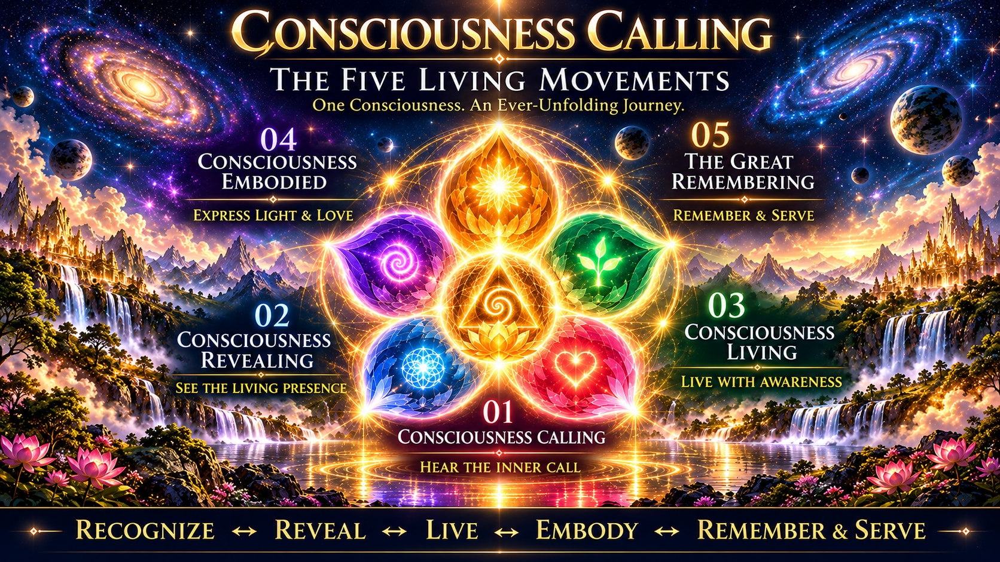
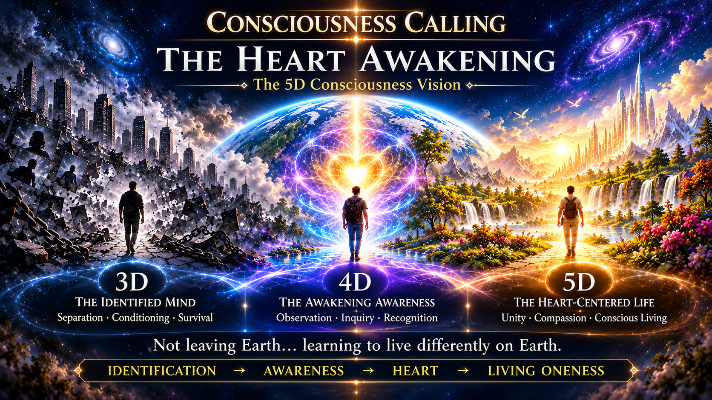

Explore Consciousness Calling
THE FIVE LIVING MOVEMENTS
One Consciousness. An Ever-Unfolding Journey.

- Consciousness CallingHear
- Consciousness RevealingSee
- Consciousness LivingLive
- Consciousness EmbodiedExpress
- The Great RememberingRemember & Serve
LIGHT CODE: RECOGNIZE ↔ REVEAL ↔ LIVE ↔ EMBODY ↔ REMEMBER & SERVE
These are interconnected, revisitable Living Movements of One Consciousness—not mandatory stages, ranks, or five confirmed book titles. The Great Remembering is the fifth Living Movement; REMEMBER & SERVE is its Light Code and experiential expression. The Great Remembering is not the end of Consciousness Calling. It is Consciousness recognized and expressed through the way we live, love and serve.

THE HEART AWAKENING — THE 5D CONSCIOUSNESS VISION
The next evolution of human life is not merely about what humanity can create through the Mind, but how consciously humanity can live through the Heart. The Heart Awakening is not about leaving Earth. It is about learning to live differently on Earth.
LIGHT CODE: IDENTIFICATION → AWARENESS → HEART → CONSCIOUS LIVING
THE SEVEN DOORWAYS — FROM MIND TO HEART
NOTICE → PAUSE → FEEL → RECOGNIZE → ALIGN → REMEMBER → LIVE
Revisitable invitations for conscious living, not compulsory levels of attainment.

| Doorway | Focus | Light Code |
|---|---|---|
| NOTICE | Mind and conditioning | OBSERVE → NOTICE → UNDERSTAND |
| PAUSE | Silence within | PAUSE → SILENCE → PRESENCE |
| FEEL | Heart as doorway | ATTENTION → HEART → LOVE |
| RECOGNIZE | I AM Presence | STILLNESS → I AM → RECOGNITION |
| ALIGN | Mind–Heart alignment | PAUSE → FEEL → DISCERN → ACT |
| REMEMBER | Master Light within | DEVOTION → RECOGNITION → REMEMBRANCE |
| LIVE | Living Light & Love | PRESENCE → LOVE → ACTION → SERVICE |
THE SEVEN DOORWAYS — FROM MIND TO HEART (Inner Recognition)
Seven invitations to bring awareness into everyday life.
The Seven Doorways invite us to move from habitual reactions toward a more conscious, Heart-centered way of living. They are gentle practices we can return to whenever life brings uncertainty, emotion or a choice. Each doorway offers a moment to observe what is happening within, listen with compassion and allow that awareness to shape our response. You can begin wherever you are; the doorways may overlap and unfold in their own rhythm.
NOTICE → PAUSE → FEEL → RECOGNIZE → ALIGN → REMEMBER → LIVE
01 | NOTICE — Observe what is moving within.
Notice your thoughts, emotions and familiar reactions without immediately judging or changing them. Ask: “What is happening within me right now?” Recognition begins when an automatic pattern becomes visible.
02 | PAUSE — Make room for Presence.
Before speaking or acting, take a gentle breath. Allow a little space between what happened and your response. Even a brief pause can help you listen more clearly.
03 | FEEL — Meet yourself with compassion.
Bring attention to your Heart and body. Acknowledge what you feel—fear, sadness, anger, gratitude or joy—without pushing it away. Ask: “What needs understanding and care?”
04 | RECOGNIZE — Discover the awareness beneath the experience.
Notice that thoughts and feelings change, while you can remain aware of them. Within Consciousness Calling, this is an invitation to recognize the I AM Presence: the quiet sense of being beneath your roles, stories and reactions.
05 | ALIGN — Let awareness guide your next choice.
Bring mind and Heart into conversation. Ask: “What response expresses Love, truth, Dharma and responsibility here?” Alignment becomes practical through a kind word, an honest boundary, a thoughtful decision or an act of care.
06 | REMEMBER — Return to the Light within.
Reconnect with the Divine Presence you revere through silence, prayer, remembrance or devotion. Let this connection deepen discernment and trust as you meet everyday responsibilities.
07 | LIVE — Make recognition visible through action.
Allow what you have recognized to become part of how you work, listen, care and serve. The doorway opens into ordinary life: keeping a promise, listening patiently, repairing a misunderstanding or helping someone in need.
A Simple Way To Begin Today
When a conversation unsettles you, notice your reaction, pause for a breath and feel what is present. Recognize that you can observe the emotion without letting it decide your response. Align with what is truthful and compassionate, remember the Presence you trust and live that recognition through your next action. You do not need to name every doorway each time; begin with one conscious pause.
The invitation is simple: let the Light you recognize within become the Love you live.